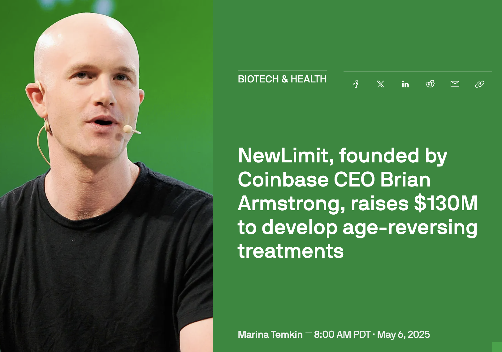
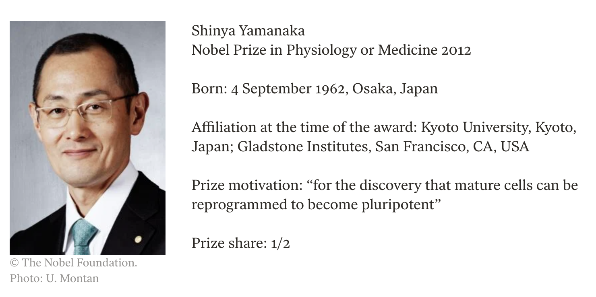
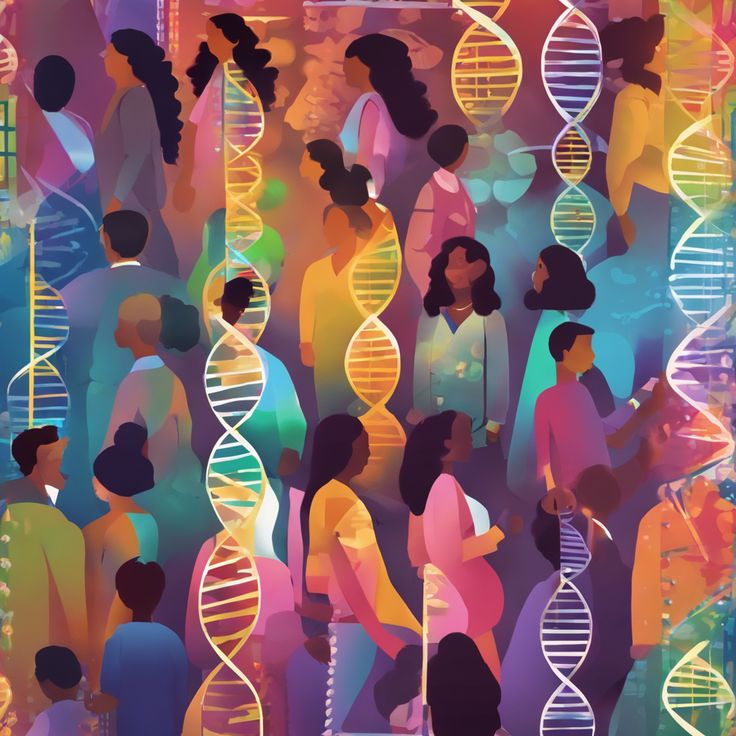
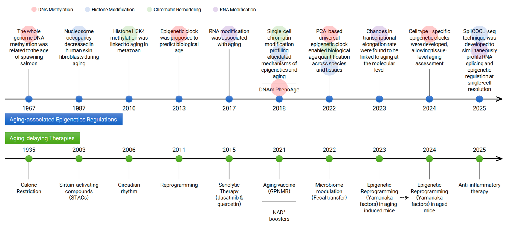
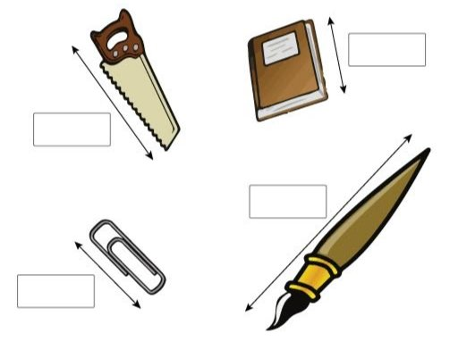
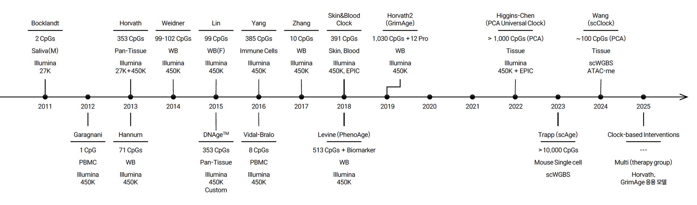

Image 1: Measurement of Objects

Image 2: Aging and Epigenetics Timeline (2011-2025)

Image 3: Epigenetics and Aging Research Timeline (1967-2025)

Image 4: Illustration of Diverse Group with DNA

Image 5: Shinya Yamanaka - Nobel Prize 2012

Image 6: NewLimit Biotech News
